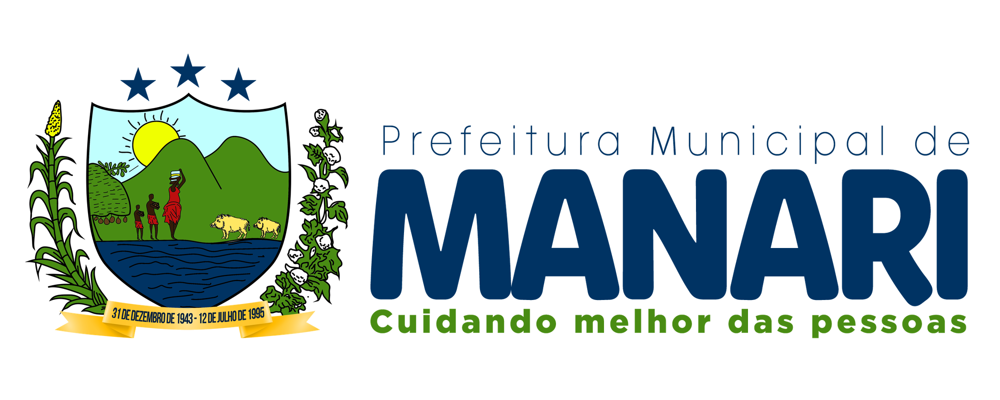
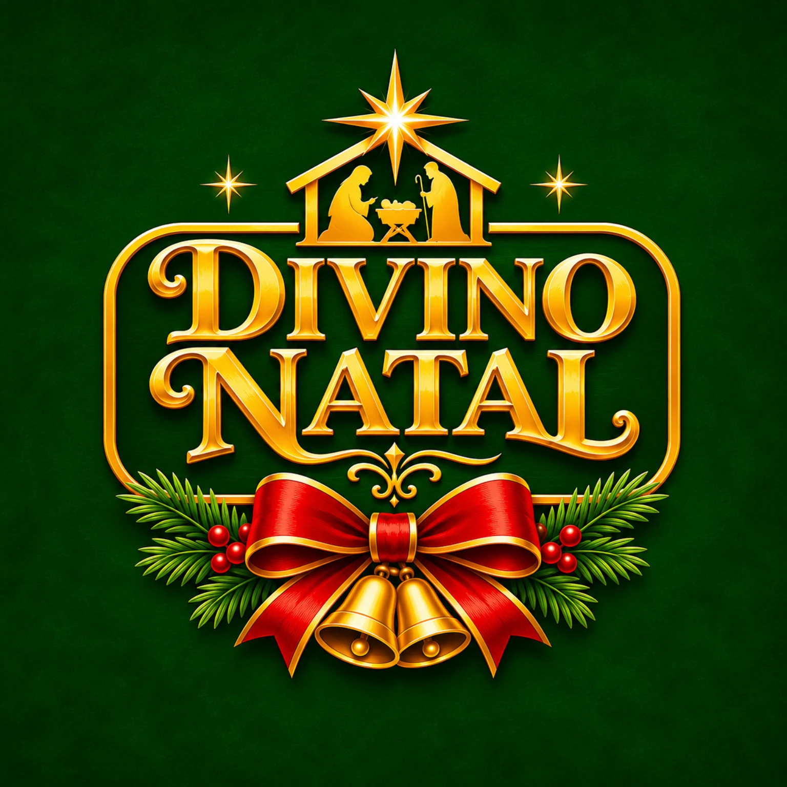

Luzes que encantam
A ornamentação natalina transforma a praça em um espaço de celebração.

O Divino Natal chega mais uma vez a Manari para iluminar a cidade e reunir as famílias em uma celebração cheia de encanto.
Uma festa de luzes para viver juntos.
A Prefeitura de Manari prepara mais uma edição do Divino Natal, com a ornamentação da praça e um convite especial para a população celebrar esse momento.
Reúna a família, convide os amigos e venha viver o encanto da inauguração das luzes. A data, o horário e a programação serão divulgados nos canais oficiais da Prefeitura.
A ornamentação natalina transforma a praça em um espaço de celebração.
Um convite para passear, estar perto e criar novas lembranças em Manari.
Tabuleiros na praça e dados digitais no celular para brincar juntos.
As mesas da praça terão tabuleiros para as pessoas jogarem. Para lançar os dados, basta abrir o jogo no portal ou no aplicativo da Prefeitura pelo celular.
Escolha um ou dois dados, faça o lançamento e use o resultado para brincar no tabuleiro físico, seguindo as regras da mesa.
Abrir o jogo de dadosO jogo digital fornece os dados.
O tabuleiro está nas mesas da praça.
Na praça, procure uma das mesas com o tabuleiro do Divino Natal.
Acesse esta área pelo portal ou aplicativo da Prefeitura e toque em “Abrir os dados”.
Lance um ou dois dados e siga as orientações do tabuleiro para continuar a brincadeira.
Você e sua família são nossos convidados para o Divino Natal em Manari.
Abrir os dados